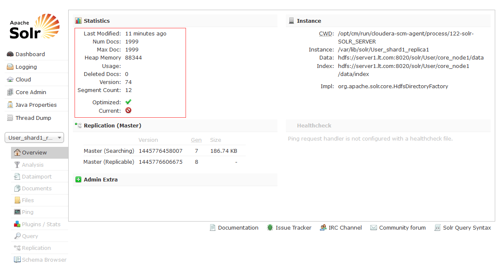

关于Hbase二级索引
HBase 是一个列存数据库，每行数据只有一个主键RowKey，无法依据指定列的数据进行检索。查询时需要通过RowKey进行检索，然后查看指定列的数据是什么，效率低下。在实际应用中，我们经常需要根据指定列进行检索，或者几个列进行组合检索，这就提出了建立 HBase 二级索引的需求。
二级索引构建方式：表索引、列索引、全文索引
- 表索引是将索引数据单独存储为一张表，通过 HBase Coprocessor 生成并访问索引数据。
- 列索引是将索引数据与源数据存储在相同的 Region 里，索引数据定义为一个单独的列族，也是利用 Coprocessor 来生成并访问索引数据。对于表索引，源数据表与索引表的数据一致性很难保证，访问两张不同的表也会增加 IO 开销和远程调用的次数。对于列索引，单表的数据容量会急剧增加，对同一 Region 里的多个列族进行 Split 或 Merge 等操作时可能会造成数据丢失或不一致。
- 全文索引：以CDH5中的Lily HBase Indexer服务实现，其使用SolrCloud存储HBase的索引数据，Indexer索引和搜索不会影响HBase运行的稳定性和HBase数据写入的吞吐量，因为索引和搜索过程是完全分开并且异步的。Lily HBase Indexer在CDH5中运行必须依赖HBase、SolrCloud和Zookeeper服务。

关于Key-Value Indexer组件
CDH官方文档
hbase-indexer官方WIKI
参考博客：Email Indexing Using Cloudera Search and HBase
参考博客： Cloudera Search Solr初探
参考博客：一种基于UDH Search的HBase二级索引构建方案
CDH5.4中的Key-Value Indexer使用的是Lily HBase NRT Indexer服务，Lily HBase Indexer是一款灵活的、可扩展的、高容错的、事务性的，并且近实时的处理HBase列索引数据的分布式服务软件。它是NGDATA公司开发的Lily系统的一部分，已开放源代码。
Lily HBase Indexer使用SolrCloud来存储HBase的索引数据，当HBase执行写入、更新或删除操作时，Indexer通过HBase的replication功能来把这些操作抽象成一系列的Event事件，并用来保证写入Solr中的HBase索引数据的一致性。并且Indexer支持用户自定义的抽取，转换规则来索引HBase列数据。Solr搜索结果会包含用户自定义的columnfamily:qualifier字段结果，这样应用程序就可以直接访问HBase的列数据。而且Indexer索引和搜索不会影响HBase运行的稳定性和HBase数据写入的吞吐量，因为索引和搜索过程是完全分开并且异步的。
Lily HBase Indexer在CDH5中运行必须依赖HBase、SolrCloud和Zookeeper服务。
使用 Lily HBase Batch Indexer 进行索引
借助 Cloudera Search，您可以利用 MapReduce 作业对 HBase 表进行批量索引。批量索引不需要以下操作：
- HBase 复制
- Lily HBase Indexer 服务
- 通过 Lily HBase Indexer 服务注册 Lily HBase Indexer 配置
该索引器支持灵活的、自定义的、特定于应用程序的规则来将 HBase 数据提取、转换和加载到 Solr。Solr 搜索结果可以包含到存储在 HBase 中的数据的 columnFamily:qualifier 链接。这样，应用程序可以使用搜索结果集直接访问匹配的原始 HBase 单元格。
创建HBase集群的表中列索引的步骤：
- 填充 HBase 表。
- 创建相应的 SolrCloud 集合
- 创建 Lily HBase Indexer 配置
- 创建 Morphline 配置文件
- 注册 Lily HBase Indexer Configuration 和 Lily HBase Indexer Service
填充 HBase 表
在配置和启动系统后，创建 HBase 表并向其添加行。例如：
对于每个新表，在需要通过发出格式命令进行索引的每个列系列上设置 REPLICATION_SCOPE：
1 | $ hbase shell #测试数据：列簇设置REPLICATION_SCOPE disable 'User' drop 'User' create 'User', {NAME => 'data', REPLICATION_SCOPE => 1} disable 'User' alter 'User', {NAME => 'detail', REPLICATION_SCOPE => 1} enable 'User' #新增CF disable 'User' alter 'User', {NAME => 'detail', REPLICATION_SCOPE => 1} enable 'User' #修改现有 disable 'User' alter 'User', {NAME => 'data', REPLICATION_SCOPE => 1} enable 'User' # 插入测试数据 put 'User','row1','data:name','u1' put 'User','row1','data:psd','123' |
创建相应的 SolrCloud 集合
用于 HBase 索引的 SolrCloud 集合必须具有可容纳 HBase 列系列的类型和要进行索引处理的限定符的 Solr 架构。若要开始，请考虑将包括一切 data 的字段添加到默认schema。一旦您决定采用一种schema，使用以下表单命令创建 SolrCloud 集合：
user示例配置
1 | # 生成实体配置文件： solrctl instancedir --generate $HOME/hbase-indexer/User |
编辑schema，需包含以下内容vim $HOME/hbase-indexer/User/conf/schema.xml
1 | <!-- 绑定rowkey--> |
1 | # 创建 collection实例并将配置文件上传到 zookeeper： solrctl instancedir --create User $HOME/hbase-indexer/User # 上传到 zookeeper 之后，其他节点就可以从zookeeper下载配置文件。接下来创建 collection: solrctl collection --create User |
注意
在schema.xml中uniqueKey必须为rowkey,而rowkey默认使用’id’字段表示，
创建 Lily HBase Indexer 配置
Indexer-configuration官方参考
在HBase-Solr的安装目录/usr/lib/hbase-solr/下，创建morphline-hbase-mapper.xml文件，文件内容如下：
$ vim $HOME/hbase-indexer/morphline-hbase-mapper.xml
1 | <?xml version="1.0"?> |
注意：当使用绝对或者相对路径来指定路径时，集群中的其它机器也要在配置路径上有该文件，如果是通过Cloudera Manager管理的话只需要在CM中修改后即可，CM会自动分发给集群。当然该配置文件还有很多其它参数可以配置，扩展阅读。
创建 Morphline 配置文件
Morphlines是一款开源的，用来减少构建hadoop ETL数据流程时间的应用程序。它可以替代传统的通过MapReduce来抽取、转换、加载数据的过程，提供了一系列的命令工具，
具体可以参见：http://kitesdk.org/docs/0.13.0/kite-morphlines/morphlinesReferenceGuide.html。
对于HBase的其提供了extractHBaseCells命令来读取HBase的列数据。我们采用Cloudera Manager来管理morphlines.conf文件，使用CM来管理morphlines. conf文件除了上面提到的好处之外，还有一个好处就是当我们需要增加索引列的时候，如果采用本地路径方式将需要重新注册Lily HBase Indexer的配置文件，而采用CM管理的话只需要修改morphlines.conf文件后重启Key-Value HBase Indexer服务即可。
具体操作为：进入Key-Value Store Indexer面板->配置->服务范围->Morphlines->Morphlines文件。在该选项加入如下配置：
注意：每个Collection对应一个morphline-hbase-mapper.xml

$ vim /$HOME/morphlines.conf
1 | SOLR_LOCATOR : { # Name of solr collection collection : collection # ZooKeeper ensemble zkHost : "$ZK_HOST" } morphlines : [ { id : morphline importCommands : ["org.kitesdk.**", "com.ngdata.**"] commands : [ { extractHBaseCells { mappings : [ { inputColumn : "data:name" outputField : "data_name" type : string source : value }, { inputColumn : "data:psd" outputField : "data_psd" type : string source : value }, { inputColumn : "data:address" outputField : "data_address" type : string source : value }, { inputColumn : "data:photo" outputField : "data_photo" type : string source : value } ] } } { logDebug { format : "output record: {}", args : ["@{}"] } } ] } ] |
注册 Lily HBase Indexer Configuration 和 Lily HBase Indexer Service
当 Lily HBase Indexer 配置 XML文件的内容令人满意，将它注册到 Lily HBase Indexer Service。上传 Lily HBase Indexer 配置 XML文件至 ZooKeeper，由给定的 SolrCloud 集合完成此操作。例如：
1 | hbase-indexer add-indexer \ --name userIndexer \ --indexer-conf $HOME/hbase-indexer/User/conf/morphline-hbase-mapper.xml \ --connection-param solr.zk=server1:2181/solr \ --connection-param solr.collection=User \ --zookeeper server1:2181 |
验证索引器是否已成功创建
执行$ hbase-indexer list-indexers验证索引器是否已成功创建
更多帮助，请使用以下命令：
1 | hbase-indexer add-indexer --help hbase-indexer list-indexers --help hbase-indexer update-indexer --help hbase-indexer delete-indexer --help |
测试是solr是否已新建索引
写入数据时，在solr-webui控制台查看日志是否更新
1 | put 'User','row1','data','u1' put 'User','row1','data:name','u2' put 'User','row2','data:name','u2' put 'User','row2','data:psd','123' put 'User','row2','data:address','address2' put 'User','row2','data:photo','photo2' put 'User','row2','data:name','u2' put 'User','row2','data:psd','123' put 'User','row2','detail:address','address2' put 'User','row2','detail:photo','photo2' put 'User','row3','data:name','u2' put 'User','row3','data:psd','123' put 'User','row3','detail:address','江苏省南京市' put 'User','row3','detail:photo','phto3' |

折腾几天弄好，下一步是如何以构建好的索引Hbase实现多列条件的组合查询。
扩展命令
1 | # solrctl solrctl instancedir --list solrctl collection --list # 更新coolection配置 solrctl instancedir --update User $HOME/hbase-indexer/User solrctl collection --reload User #删除instancedir solrctl instancedir --delete User #删除collection solrctl collection --delete User #删除collection所有doc solrctl collection --deletedocs User #删除User配置目录 rm -rf $HOME/hbase-indexer/User # hbase-indexer # 若修改了morphline-hbase-mapper.xml，需更新索引 hbase-indexer update-indexer -n userIndexer # 删除索引 hbase-indexer delete-indexer -n userIndexer |
所遇问题QA
Lily HBase Indexer Service注册错误
详细日志1
2
3
4
5
6[WARN ][08:56:49,677][.com:2181)] org.apache.zookeeper.ClientCnxn - Session 0x0 for server null, unexpected error, closing socket connection and attempting reconnect
java.net.ConnectException: Connection refused
at sun.nio.ch.SocketChannelImpl.checkConnect(Native Method)
at sun.nio.ch.SocketChannelImpl.finishConnect(SocketChannelImpl.java:739)
at org.apache.zookeeper.ClientCnxnSocketNIO.doTransport(ClientCnxnSocketNIO.java:350)
at org.apache.zookeeper.ClientCnxn$SendThread.run(ClientCnxn.java:1081)
解决：将帮助文档原文中的-zookeeper hbase-cluster-zookeeper:2181中hbase-cluster-zookeeper换成zoomkeeper的主机名
schema.xm和morphline.conf配置问题
1 | ERROR org.apache.solr.common.SolrException: ERROR: [doc=row3] unknown field 'data' |
解决方式：
Thanks for the response. In the meantime I got a solution which is fine for me using:
schema新增配置：
1 | <dynamicField name="*" type="string" indexed="true" stored="true" /> |
修改schema.xml后，执行以下命令更新配置：
solrctl instancedir –update hbase-collection-user $HOME/hbase-collection-user
solrctl collection –reload hbase-collection-user
修改Collection
当我们创建Collection完成后，如果需要修改schema.xml文件重新配置需要索引的字段可以按如下操作：
- 如果是修改原有schema.xml中字段值，而在solr中已经插入了索引数据，那么我们需要清空索引数据集，清空数据集可以通过solr API来完成。
- 如果是在原有schema.xml中加入新的索引字段，那么可以跳过1，直接执行：
1 | solrctl instancedir --update solrtest $HOME/solrtest solrctl collection --reload solrtest |
多个HbaseTable配置schema.xml和morphline.conf
解决方式：
email-schema示例
Q：morphline.conf和morphline-hbase-mapper.xml文件是否每个HbaseTable都要对应配置一个?
A：每一个Hbase Table对应生成一个Solr的Collection索引，每个索引对应一个Lily HBase Indexer 配置文件morphlines.conf和morphline配置文件morphline-hbase-mapper.xml，其中morphlines.conf可由CDH的Key-Value Store Indexer控制台管理，以id区分
官方说明：1
2
3
4
5Creating a Lily HBase Indexer configuration
Individual Lily HBase Indexers are configured using the hbase-indexer command line utility.
Typically, there is one Lily HBase Indexer configuration for each HBase table,
but there can be as many Lily HBase Indexer configurations as there are tables and column families and corresponding collections in the SolrCloud.
Each Lily HBase Indexer configuration is defined in an XML file such as morphline-hbase-mapper.xml.
对HBaseTable已有数据新建索引
需要用到Lily HBase Indexer的批处理索引功能了
1 | sudo hadoop --config /etc/hadoop/conf \ jar /usr/lib/hbase-solr/tools/hbase-indexer-mr-1.5-cdh5.4.4-job.jar \ --conf /etc/hbase/conf/hbase-site.xml \ -D 'mapred.child.java.opts=-Xmx500m' \ --hbase-indexer-zk master:2181 \ --collection hbase-collection-user \ --hbase-indexer-name userIndexer \ --hbase-indexer-file $HOME/hbase-collection-user/conf/morphline-hbase-mapper.xml \ --go-live \ ``` 错误日志 ``` java Caused by: java.io.IOException Can not find resource solrconfig.xml in classpath or /root/file:/tmp/hadoop-root/mapred/local/1441858645500/6a1a458e-35e2-4f66-82df-02795ba44e2c.solr.zip/collection1/conf |